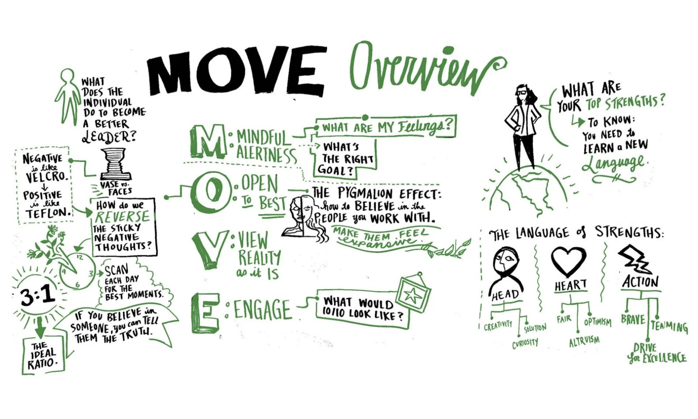
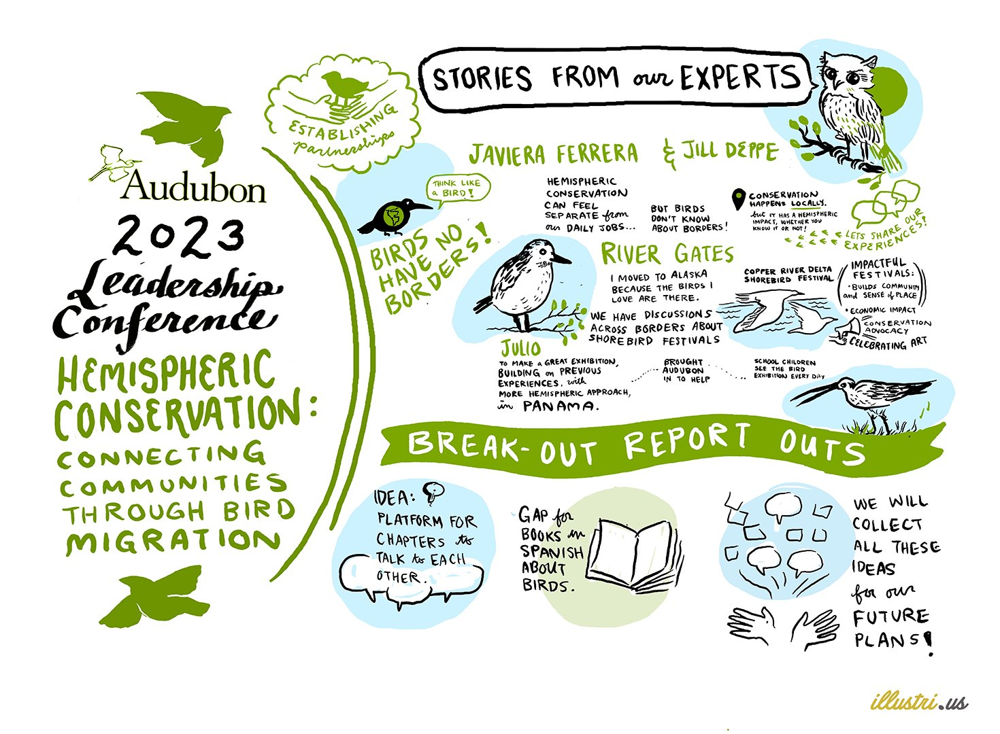
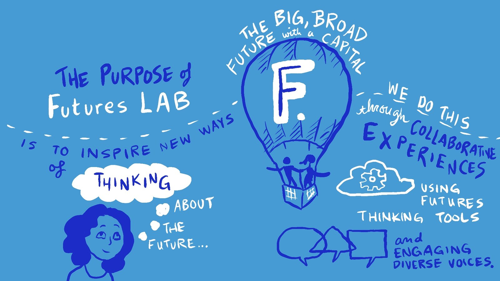

Drawing live, in the room
A speaker is talking. You are listening, deciding what matters, composing a page, and drawing it, all at once, in front of everyone, with no undo. This page holds four different versions of that job.
four formats, one practice
Whiteboard scribing is where I started professionally: capturing a conversation in words and pictures on large whiteboards, in front of dozens or hundreds of people. I clean, colour and edit the photographs afterward so they stay legible. Sometimes I draw away from the main group and the board gets wheeled in at the right moment.
Digital scribing runs over Zoom in Procreate, which is how the whole of 2020 worked. Sketchbook scribing happens in a large sketchbook with Tombow markers, then gets scanned and coloured. Animated capture takes the live drawing and rebuilds it as a finished piece the client can publish.
All four need the same thing: deciding in real time what the room will need to remember, and being right the first time. I have been taking visual notes since middle school. The professional part was learning to do it while a hundred people watch.

01 · the national audubon society
Graphic recording for the National Audubon Society, 2023 Leadership Conference. At least five full sessions, including the Opening Plenary.
- The Opening Plenary. The chief executive, the board chair and the chief conservation officer, captured live. The trust slot of the whole conference.
- Hemispheric Conservation: Connecting Communities Through Bird Migration.
- The Community Chapters staff session on Flight Plan, Audubon’s five year strategic plan.
- Supporting Local Communities, with the Seal River Watershed Alliance. Indigenous led content, carried with the care it needed.
- The EDIB Conservation Principles panel. Seven panellists drawn with live portrait likenesses, names, titles and attributed quotes, including Audubon’s chief EDIB officer. The hardest live-recording skill there is.
Every board holds Audubon’s own palette while being drawn in real time, which is where this work meets the brand-compliance work elsewhere on this site.
![The Opening Plenary board, drawn in blues and blacks on white. The Audubon logo and the words 2023 Leadership Conference, Opening Plenary sit at the centre beside a flying magpie. Live portraits of Susan Bell, chair of the board, Elizabeth Gray, and Marshall Johnson, chief conservation officer, are captioned with their quotes, including You are what hope looks like to a bird and We are being asked to rise together, birds are calling us now through their silence. A numbered list reads hemispheric approach, climate change, including all voices.](aud-plenary.jpg)


![The Hemispheric Conservation, Supporting Local Communities board, drawn almost entirely in two blues. Speakers Jeff Wells and Stephanie Thorassie are named at the top left, and a portrait of an Indigenous woman is captioned My community is very isolated. We are a group of Indigenous people, we do not have science degrees, but our knowledge is passed down through generations. Drawings of a caribou, a boat of rowers, a wolf, a shorebird and a pine forest surround quotes about the Seal River Watershed Alliance in northern Manitoba.](aud-communities.jpg)

Graphic recording for the National Audubon Society, 2023 Leadership Conference. The illustri.us credit is drawn into each board, as it was on the day.
02 · salesforce futures lab
Contracted graphic facilitator, drawing live during the session and producing the animated file afterward. January 2021.
The session was about the future of food. I drew it live, then rebuilt the capture as a two minute thirty six second hand lettered animated explainer, drawn entirely inside Salesforce’s brand blues. One of its lines: "in the future, tech and innovation can create new kinds of food."

03 · 8works, an oliver wyman company
Graphic Facilitator, 8works (an Oliver Wyman company). The paid corporate anchor of this practice.
- The Health Innovation Summit, 2020, including a Kaiser Permanente chief executive conversation, scribed live.
- The Sustainable Innovation Forum, 2020, delivered entirely online because of the pandemic. Six digital scribes, drawn in Procreate over Zoom, shown with Oliver Wyman’s permission.
Executive conversations are the hardest live rooms to draw. The speakers are quick, they self correct, and the audience is senior enough to notice if the board flattens what was said. Doing it down a video call removes the room itself, which is most of what a scribe reads.
![The Sustainable Innovation Forum 2020 Day 1 scribe, drawn in green, cyan and black. A live portrait of Ban Ki-moon sits at the centre on a banner reading eighth Secretary-General of the UN, Deputy Chair of the Elders. Around it, hand lettered quotes including we must not pause our action on climate change and we have a chance in the economic recovery to create a healthy, resilient and zero emissions future, plus drawn icons for a green economy, ending fossil fuel investment and renewable energy. A cyan bar at the foot reads scribe by Elizabeth Beier and Oliver Wyman.](gf-sif-banki.jpg)
![The Sustainable Innovation Forum 2020 Day 2 scribe, drawn in cyan, yellow, green and black. A live portrait of Kevin Rudd sits on a banner reading former Prime Minister of Australia and President of the Asia Society Policy Institute. Quotes around it cover the rolling apocalypse of climate disasters, a trillion dollar investment creating nine million jobs, and three numbered recommendations on renewable energy, energy infrastructure and decommissioning carbon. A closing line reads technology makes change possible, it is a question of political will to deliver. The foot reads scribed by Elizabeth Beier for Oliver Wyman.](gf-sif-rudd.jpg)
Six scribes across the forum, all drawn in Procreate over Zoom. The full set is on my service page.
04 · independent civic scribing
Self directed and unpaid. This is not client work and it is never presented as client work. It is where I went because I wanted the rooms drawn.
- An Elizabeth Warren town hall in Oakland, May 2019. I arrived four hours early to get a position near the front, drew it live, and the campaign retweeted the result.
- Netroots Nation, 2015 and 2016. A progressive conference of nearly three thousand people, scribed across two years.
- Marches: the Black Lives Matter march in St Louis, and the march against Joe Arpaio in Phoenix.
- Volunteer scribing for SURJ Sacred Heart, and the Power of Visuals Weekathon in November 2020, an online teaching series hosted by Noun and Verb.
- The Queers and Comics Conference, 2015 and 2019. Alison Bechdel, Howard Cruse, Nicole Georges, Magdalene Visaggio in conversation with Justin Hall, and panels on health and disability and on queer cartoonists of colour. The 2019 drawings were published by The Comics Journal.
![The Elizabeth Warren town hall scribe, drawn in magenta and black. A live portrait of Warren at the microphone fills the left side, surrounded by her lines including I do not want a government that works for multi million dollar corporations, I want a government that works for American families. Large lettering on the right reads We need big structural change and I have got a plan for that, above her name and the words Oakland CA Town Hall May 31 2019. Drawn portraits of people in the crowd hold Dream Big Fight Hard signs. Signed EB19.](gf-warren.jpg)
Nobody commissioned any of this. I went because the rooms were worth drawing.
what the practice proves
- Synthesis under pressure. Deciding what matters while it is still being said, with no second pass.
- Brand discipline at speed. Three clients, three palettes, one hand. Audubon’s greens and oranges, Salesforce’s blues, all held live or in animation inside the client’s own system.
- Rooms full of senior people. Chief executives, board chairs, conference plenaries. Comfortable there, and useful there.
Bystander praise, on the public record: "To illustrate and take notes at the same time just blows my mind."
a note on credit
Client credits on this page are mine and stand on their own. Audubon came through the Illustrious roster; Salesforce was a direct contract; the 8works work was employment. The Warren town hall, Netroots Nation and the marches were unpaid and self directed, and they are listed that way everywhere I list them.
open to communications, design and program roles
Let’s talk.
Remote, or Albuquerque and hybrid. If you want to see a board up close, ask and I will send one over.